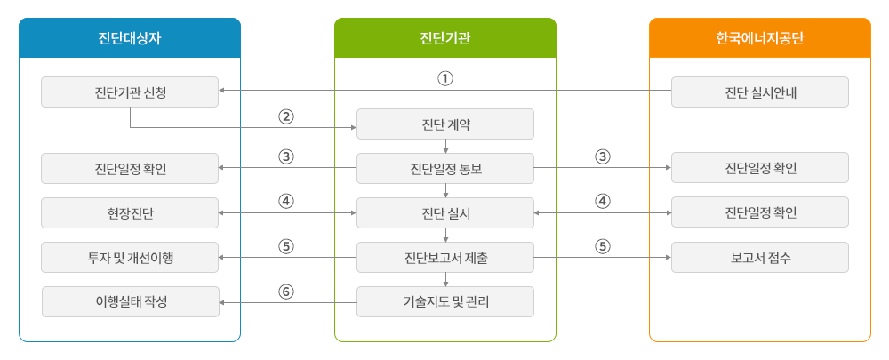
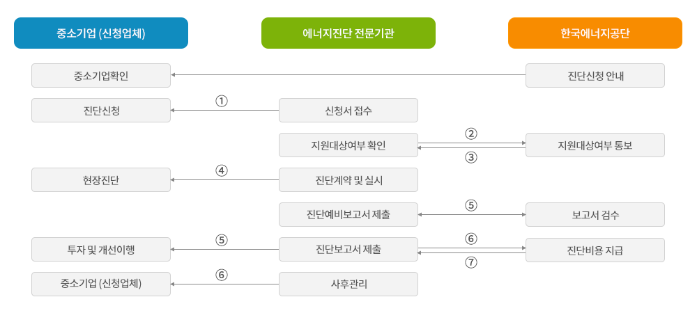
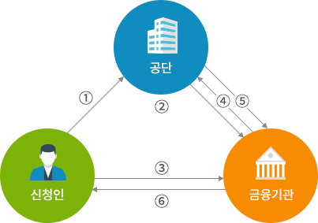

에너지 진단 개요
에너지진단은 에너지관련 전문 기술장비 및 인력을 구비한 진단기관으로부터 에너지의 공급부문, 수송부문, 사용부문 등 에너지사용시설 전반에 걸쳐 사업장의 에너지이용 현황파악, 손실요인 발굴 및 에너지절감을 위한 최적의 개선안을 제시하는 기술컨설팅 제도입니다.
- 설비별 운전상태 점검에 따른 효율성 향상 및 개선방안 제시
- 폐열 및 불합리한 에너지 낭비요인 파악
- 효율적인 폐열회수 이용방안 및 경제성 제시
- 신·재생에너지 적용방안 검토
- 합리적인 에너지 사용 모델 제시
진행절차

진단주기
에너지다소비사업자가 주기적으로 에너지 진단을 받아야 하는 법정기간을 말합니다.
- 연간에너지 사용량이 20만toe 미만인 업체는 전체진단을 실시하여야 하며, 진단주기는 5년입니다.
- 연간에너지 사용량이 20만toe 이상인 업체는 전체진단을 실시하는 경우 진단주기는 5년이고, 10만toe 이상의 사용량을 기준으로 구역별로 나누어 부분진단을 실시하는 경우 진단주기는 3년입니다.
계약 및 진단비용
에너지진단은 진단대상자와 진단기관이 계약을 체결하여 실시하게 됩니다. 계약체결 시 대상사업장의 효율적 에너지진단을 위하여 중점 진단대상시설 및 설비를 정하도록 하고 있으며, 에너지진단이 한정된 시간과 인력에 의해 이루어지므로 진단일정 내에 중점적으로 시행할 수 있는 범위를 진단기관과 협의하여 정하게 됩니다.
진단등급은 계약일 기준 에너지진단대상의 최근년도 에너지사용량이 기준이 됩니다. 에너지다소비업자는 매년 1월 31일까지 에너지사용량을 신고하여야 하며, 최근년도 에너지사용량을 기준으로 진단계약이 체결될 수 있도록 유의하여야 합니다.
(진단등급현황)
| 진단등급 | 연간에너지사용량 (toe) | 일수 | 인력(인) | 총소요(인·일) | ||
|---|---|---|---|---|---|---|
| 현장(일) | 보고서(일) | 소계(일) | ||||
| A5 | 20만이상 | 29 | 21 | 50 | 4 | 200 |
| A4 | 10만이상~20만미만 | 25 | 43 | 172 | ||
| A3 | 5만이상~10만미만 | 15 | 18 | 36 | 144 | |
| A2 | 2만이상~5만미만 | 17 | 29 | 116 | ||
| A1 | 1만이상~2만미만 | 14 | 9 | 23 | 92 | |
| B | 5천이상~1만미만 | 11 | 8 | 19 | 3 | 57 |
| C | 2천이상~5천미만 | 5 | 8 | 13 | 39 | |
중소기업 진단비용 지원
에너지진단비용 지원대상은 연간에너지사용량 1만toe 미만의 중소기업에 한하며, 진단비용 30%를 지원하고, 당해 연도 진단비용 지원비율은 산업통상자원부장관이 정하여 공고하게 됩니다. (※ 진단비용지원은 당해 연도 예산 소진 시까지며, 조기에 마감될 수 있습니다.)
(중소기업 진단비용 지원 절차)

과태료 부과
진단주기내에 에너지진단을 받지 아니한 다소비사업자에 대하여 「에너지이용 합리화법 시행령」 제53조 관련 별표 5에 따라 2천만원 이하의 과태료에 처하게 됩니다.
| 위반행위 | 근거법령 | 1회 위반 | 2회 이상 위반 |
|---|---|---|---|
| 법 제32조제2항을 위반하여 에너지진단을 받지 아니한 에너지다소비사업자 | 법 제78조 제1항 | 1천만원 | 2천만원 |
설치 사업자금지원 안내
에너지진단결과에 따라 수행하는 시설, 공정등을 개체 또는 개선하는 것으로서 진단완료 후 4년 이내 실시하는 사업 (공정별 또는 설비별 에너지절감효과가 5% 이상인 경우에 한함)
